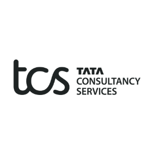
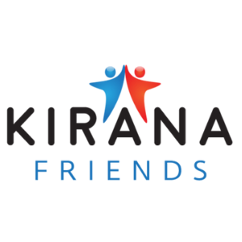

Internships & Work Experience

Tata Consultancy Services
Project Intern · Jan 2025 – Mar 2025 · Thane, Maharashtra, India
- Developed an AI-powered Video KYC solution using Azure Face API & Vision Services.
- Achieved ~95% accuracy in OCR-based document extraction, reducing manual work.
- Built a Value Asset Evaluation module cutting evaluation effort by 60% and speeding up assessments by 40%.
- Integrated 6+ Azure services ensuring secure, scalable deployment.

Kirana Friends by TRRAIN Circle Technologies
AI & ML Intern · May 2024 – Jul 2024 · Mumbai, Maharashtra, India
- Created a Shelf Analysis tool with CNNs, classifying 300,000+ entries into 30+ categories.
- Improved accuracy of product placement detection in retail stores.
- Conducted a location feasibility study using Google Maps API & business intelligence metrics.
- Worked cross-functionally to deploy AI tools enhancing regional business performance.
Pantech Prolabs India Pvt. Ltd.
Machine Learning Intern (Mar 2024 – Apr 2024)
Completed 10+ ML projects using SVM, Decision Trees, KNN & K-Means. Built a content-based movie recommender system improving relevance by 30%.
Completed 10+ ML projects using SVM, Decision Trees, KNN & K-Means. Built a content-based movie recommender system improving relevance by 30%.
Data Analytics Intern (Feb 2024 – Mar 2024)
Built dashboards, performed EDA, outlier detection & data visualization to derive business insights.
Built dashboards, performed EDA, outlier detection & data visualization to derive business insights.
Python Intern (Aug 2022 – Sept 2022)
Learned Python fundamentals, data cleaning, and scripting to prepare for advanced analytics work.
Learned Python fundamentals, data cleaning, and scripting to prepare for advanced analytics work.
Holo Inventions
R&D Intern · Nov 2023 – Jan 2024 · Mumbai, Maharashtra, India
- Developed an automated video editing tool for holographic content using computer vision.
- Reduced manual editing time by 40%, improving clarity in projections.
- Explored AR/VR/MR applications including an interactive holographic business card.
MyCaptain
Campus Ambassador · Feb 2022 – Mar 2022 · Mumbai, Maharashtra, India
- Promoted MyCaptain programs to a student base of 1,000+ peers at TCET through digital and offline campaigns.
- Contributed to a 30% increase in student sign-ups by executing targeted marketing strategies and personalized outreach.
- Organized and led 3+ engagement events including webinars and peer discussions.
- Collaborated with nationwide ambassadors to plan and optimize cross-institution marketing.
- Developed skills in business development, sales communication, and community building, enhancing leadership influence.